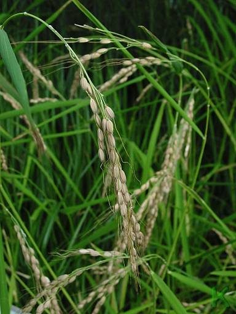

धानPaddy
Oryza sativa · Poaceae · FLR-0014

- Scientific name
- Oryza sativa L.
- Family
- Poaceae
- Hindi
- धान / चावल
- Status here
- cultivated
- IUCN
- not evaluated
When to look कब देखें
Expected mainly in June, July, August, September, October, November.
धान / Paddy
Oryza sativa L. — Poaceae
धान — जुलाई से नवम्बर के बीच पूर्वी उत्तर प्रदेश हरे खेतों का समुद्र बन जाता है। बस्ती और अयोध्या जिलों का हर समतल खेत धान से भर जाता है। धान यहाँ सिर्फ फसल नहीं है — यह पूरा परिदृश्य है।
हिंदी परिचय Hindi Overview
धान (Oryza sativa) पूर्वी उत्तर प्रदेश की जीवनरेखा है। यहाँ का किसान जून की बारिश का इंतजार धान की बुआई के लिए करता है। धान ही यहाँ की खरीफ़ फसल है — जो मानसून पर निर्भर है।
धान की खेती एक पारिस्थितिक तंत्र है:
- खेत में पानी भरा हो तो मेंढक, केंचुए, और जलीय कीट आते हैं।
- धान के पौधे पर टिड्डे, माहू, और भूरा फुदका (BPH) जैसे कीट आते हैं।
- उन्हें खाने बगुला, नीलकंठ, भुजंगा (ड्रैगो) आते हैं।
- साँप — खासकर धामन — खेत के चूहों के पीछे आते हैं।
- फसल कटते ही — सारस, बगुले, और मैना कटे खेत में दाना चुगने आते हैं।
धान की खेती यूपी की जैव विविधता का सबसे बड़ा मौसमी इंजन है।
Quick Identification शीघ्र पहचान
| Feature | Description |
|---|---|
| Height & Habit | Annual grass, 80–150 cm tall; grows in clumps (tillers) of 15–25 stems |
| Leaves | Flat, linear, 20–50 cm long, 1–2 cm wide; auricles (claw-like projections) at leaf junction |
| Ligule | Prominent, membranous, 1–2 cm long at leaf blade-sheath junction |
| Stems (culms) | Hollow, jointed, erect, with 4–6 solid nodes |
| Inflorescence | Drooping terminal panicle, 20–40 cm long, bearing self-pollinated spikelets |
| Grain | Caryopsis (5–9 mm long) enclosed in a yellow-golden husk (lemma and palea) |
Field tip: Look for flat-leaved grasses in standing water with claw-like auricles at the leaf-sheath junction. The drooping terminal panicles turning from bright green to golden-straw yellow are diagnostic. Wild Rice (Oryza rufipogon) has smaller red-black grains and is found in wild swamps, while Barnyard Grass (Echinochloa crus-galli) is a common weed that lacks auricles.
Morphology आकृति विज्ञान
| Feature | Measurement |
|---|---|
| Plant height | 80–150 cm |
| Leaf length | 20–50 cm |
| Leaf width | 1–2 cm |
| Flower diameter | 2–3 mm (spikelet length 5–9 mm) |
| Fruit / seed dimensions | 5–9 mm (grain length) |
Habit: Annual grass, 80–150 cm tall, forming tillers (clumps of multiple culms from one root). Roots fibrous, shallow (most within 30 cm depth), with aerenchyma.
Culm (stem): Erect, hollow, cylindrical; 4–7 internodes. Nodes solid. Culms generally round in cross-section.
Leaves: Linear, flat, 20–50 cm long, 1–2 cm wide. Ligule prominent (membranous, 1–2 cm), a key identification feature. Auricles (claw-like extensions at leaf junction) — distinctive of rice, absent in most other grasses at this scale.
Tillering: From the base of the plant, multiple shoots (tillers) arise during the vegetative phase, each capable of becoming a grain-bearing culm. Tillering number determines yield potential.
Inflorescence (panicle): Terminal, 20–40 cm, drooping at maturity. Branched; branches bear spikelets (1-flowered, self-pollinating). Wind-pollinated — no need for insect pollinators.
Grain: A caryopsis (fused seed and fruit wall) enclosed in husk (lemma + palea). Husk yellow-gold at maturity. Brown or white rice is the husk-removed grain.
हिंदी: एक पौधे से 15–25 तने (tillers)।
स्व-परागण — हवा से। कीट की ज़रूरत नहीं।
दाने पानी भरे खेत में, हवाई जड़ों की बदौलत।
The Paddy Field as Ecosystem धान का खेत एक पारिस्थितिक तंत्र है
A flooded paddy field in July–October is not just agriculture — it is a wetland.
Aquatic phase (July–September, fields flooded):
- Water in the field supports aquatic invertebrates: water beetles, water bugs, diving beetles, mosquito larvae
- Frogs breed in the water between rows — the Indian Bull Frog and Common Toad are both paddy-field breeders
- Herons, egrets, and pond herons wade through standing water fishing for frogs and fish that enter with flood water
- Common Kingfisher perches on bunds, diving into the 10–20 cm standing water
Canopy phase (August–October, plants growing):
- Paddy grasshopper (Oxya fuscovittata) — the dominant insect pest — chews leaves
- Gall midge, stem borer, and leaf folder moths add to the herbivore community
- These herbivores attract predatory insects: ground beetles, spiders (Argiope species are common in paddy), dragonflies
- Black Drongo and Indian Roller hawk insects disturbed by farming operations
Harvest phase (October–November):
- Cut paddy fields flood with birds: Sarus Crane, mynas, parakeets, and sparrows feed on fallen grain
- Rat snakes (Ptyas mucosa) are active in the harvest period — following the rodents that have colonized the field
- Mongooses appear hunting the same rodents
Post-harvest:
- Stubble fields host larks, wagtails, and migratory birds for 2–3 months
- Ground invertebrates recover through the winter
हिंदी: बाढ़ का पानी → मेंढक, कीट, मछली आते हैं → बगुले, किंगफिशर आते हैं।
पौधा बड़ा होने पर → टिड्डे आते हैं → भुजंगा, नीलकंठ उन्हें खाते हैं।
फसल कटने पर → सारस, मैना, तोता दाना चुगते हैं → धामन साँप चूहे पकड़ते हैं।
धान का खेत एक पारिस्थितिक चक्र चलाता है।
Life Cycle / Phenology जीवन चक्र
| Stage | Timing (Eastern UP) | What happens |
|---|---|---|
| Nursery (नर्सरी) | June | Seeds sown densely in small nursery beds |
| Transplanting (रोपाई) | Late June–July | Seedlings pulled, transplanted into flooded fields |
| Tillering (कंसे निकलना) | July–August | Side shoots form; plant establishes |
| Panicle initiation (बाली बनना) | August–September | Grain head begins forming inside sheath |
| Flowering (फूलना) | September | Wind pollination; grain set |
| Grain filling (दाना भरना) | September–October | Grains swell and ripen |
| Harvest (कटाई) | October–November | Panicles cut; threshed; stored |
हिंदी: जून में nursery → जुलाई में transplanting → अगस्त में tillering → सितम्बर में panicle formation → अक्टूबर-नवम्बर में कटाई।
Varieties of Eastern UP पूर्वी यूपी की प्रमुख किस्में
| Variety type | हिंदी | Notes |
|---|---|---|
| Sona Masuri | सोना मसूरी | Most widely grown medium-grain in UP |
| Sharbati | शरबती | Aromatic; grown in some Basti villages |
| MTU 7029 (Swarna) | स्वर्णा | High-yield; flood-tolerant; dominates the belt |
| NDR-359 | NDR-359 | NDUAT Faizabad variety; popular in UP |
| Traditional/Deshi | देशी धान | Long-duration, tall, deep-water adapted; declining |
| Basmati | बासमती | Limited in eastern UP; more western UP |
हिंदी: स्वर्णा (MTU 7029) बस्ती–अयोध्या बेल्ट की सबसे आम किस्म है।
देशी धान की किस्में घटती जा रही हैं — यह जैव विविधता की हानि है।
Agricultural / Human Relevance कृषि और मानव संबंध
Economic importance: Rice is the primary food crop and income source for most small farmers in Basti and Ayodhya districts. Eastern UP along with Bihar constitutes India's "rice bowl." A failed paddy crop means food insecurity for millions.
Major pests (eastern UP):
- Brown Planthopper (BPH) — Nilaparvata lugens — sucks phloem; can cause "hopperburn" (sudden yellowing and crop collapse); major problem
- Paddy Grasshopper (Oxya fuscovittata) — leaf damage; locally significant
- Yellow Stem Borer — Scirpophaga incertulas — larvae tunnel stems; "deadheart" and "whitehead" symptoms
- Blast (Magnaporthe oryzae) — fungal; most feared disease; can destroy entire fields
Ecological management opportunity: Traditional paddy pest management in UP included field flooding (drowns soil pests), crop rotation, and varietal diversity. Chemical insecticide overuse has disrupted the natural predator-prey balance (spiders, dragonflies, Drongo and Roller birds all reduced).
Cultural significance:
- Dhan (standing paddy) is auspicious; Diwali in October-November coincides with the harvest season — the two are linked
- Rice is the primary offering in pujas and rituals (akshat — uncooked rice)
- Paddy straw is used for thatching, cattle fodder, and mat weaving
हिंदी: धान पूर्वी यूपी के ज़्यादातर किसानों की मुख्य आय है।
भूरा फुदका (BPH) सबसे खतरनाक कीट।
दीवाली और धान की कटाई का मौसम एक ही है — यह इत्तेफाक नहीं।
Expected Locally स्थानीय रूप से अपेक्षित
Not a field record. Written from published accounts for eastern Uttar Pradesh. No confirmed local sighting yet — if you have seen it, that is what the atlas needs.
अभी तक स्थानीय पुष्टि नहीं। यह विवरण प्रकाशित स्रोतों से है, किसी अवलोकन से नहीं।
| Date | Location | Notes |
|---|---|---|
Distribution वितरण
Global range: Native to Asia (domesticated in China/India); cultivated globally in tropical, subtropical, and warm temperate regions, particularly in East, South, and Southeast Asia.
In India: Cultivated in almost all states, with major production belts in West Bengal, Uttar Pradesh, Punjab, Andhra Pradesh, Bihar, and Punjab.
In Uttar Pradesh: The dominant kharif crop, cultivated extensively throughout the Gangetic plains, particularly in the eastern, central, and western districts.
In Basti district / eastern UP: Ubiquitous across the district's lowlands during the monsoon season (Kharif), occupying nearly all bunded agricultural land.
Range notes: No significant range changes documented, but planting area fluctuates based on seasonal monsoon onset and water availability.
Research Questions शोध प्रश्न
Anyone can investigate these | कोई भी इन प्रश्नों की जाँच कर सकता है
- How many bird species visit a paddy field during one week of harvest? / कटाई के एक सप्ताह में कितने पक्षी एक धान के खेत में आते हैं? — Walk the field perimeter morning and evening; record every species.
- Are frogs breeding in your flooded paddy fields? / क्या आपके धान के खेत में मेंढक प्रजनन करते हैं? — Listen at dusk in July–August; record calling species. Mark egg masses if found.
- Does spider density in paddy fields correlate with insect pest levels? / धान के खेत में मकड़ियाँ और कीट पेस्ट का कोई संबंध है? — Count spiders and hoppers per plant in 5 spots; repeat weekly. A field-scale biodiversity experiment.
- Which traditional deshi varieties are still grown in your village? / आपके गाँव में कौन सी देशी किस्में अभी भी उगाई जाती हैं? — Document name, farmer, field size. These may be irreplaceable genetic material.
- When does the Sarus Crane first appear in harvested paddy fields each year? / सारस पहली बार धान के खेत में कब आते हैं (कटाई के बाद)? — Record the date annually. A climate and crop phenology indicator.
Similar Species मिलती-जुलती प्रजातियाँ
| Species | How to tell apart | हिंदी |
|---|---|---|
| Wild rice (Oryza rufipogon) | Smaller grain; more red-black coloring; found in wild wetlands, not cultivated fields | जंगली धान |
| Barnyard grass (Echinochloa crus-galli) | No auricles; larger plant; common paddy weed — not a rice | सांवक / सावाँ — धान का खरपतवार |
| Millet (Pennisetum glaucum, bajra) | Compact cylindrical spike, not drooping panicle; dryland crop | बाजरा |
Field rule: Flooded field + hollow jointed stems + auricles at leaf sheath junction + drooping grain head = rice. Barnyard grass (savan) is the most common lookalike but has no auricles and a different seed arrangement.
Taxonomy & Classification वर्गीकरण
Original description. Oryza sativa was described by Carl Linnaeus in 1753 in Species Plantarum 1: 333. Type locality: "Habitat in Indiae paludibus" (in the marshes of India). The genus name Oryza is derived from the classical Greek word oryza for rice.
Subspecies. Two major subspecies are recognized globally: O. s. indica (long-grain, tropical rice) and O. s. japonica (short-grain, temperate rice). The form cultivated in eastern UP is:
| Subspecies | Authority | Range | Notes |
|---|---|---|---|
| Oryza sativa subsp. indica | Kato, 1930 | Tropical Asia, including Gangetic plain | Predominant subspecies cultivated in UP; adapted to waterlogged conditions |
Family and order placement. Belongs to the order Poales, family Poaceae (historically Gramineae), subfamily Oryzoideae, tribe Oryzeae. Poaceae is one of the largest and most ecologically dominant families of monocotyledonous flowering plants, containing about 780 genera and 12,000 species.
Phylogenetic notes. Oryza sativa was domesticated from its wild progenitor Oryza rufipogon approximately 8,000 to 10,000 years ago. Phylogenetic studies show that the indica and japonica lineages may have been domesticated independently from different populations of O. rufipogon in South Asia and East Asia respectively.
IUCN status rationale. This species has not been formally assessed by the IUCN Red List. As the world's most widely cultivated cereal crop, its global population is vast and stable, though genetic erosion of traditional landraces is a conservation concern.
Photo Gallery फोटो गैलरी
Note: Add field photos tomedia/species/paddy/
फोटो निर्देश: रोपाई के समय (जुलाई), बाली निकलते समय (सितम्बर), पकी सुनहरी बाली (अक्टूबर), और पक्षियों से भरे कटे खेत (नवम्बर)।
Photos needed आवश्यक फोटो
- [ ] Transplanting in progress — flooded field (रोपाई)
- [ ] Tillers forming — dense green clumps (कंसे)
- [ ] Panicle drooping with grain (झुकी हुई बाली)
- [ ] Ripe golden field before harvest (पकी सुनहरी फसल)
- [ ] Auricle close-up at leaf junction (पत्ती के जोड़ पर 'कान')
- [ ] Birds in harvested paddy field (कटे खेत में पक्षी)
- [ ] Frog or heron in flooded paddy (मेंढक / बगुला बाढ़ वाले खेत में)
Atlas Connections संबंधित प्रजातियाँ
- Paddy Grasshopper — the dominant insect pest of paddy; population tracks the rice calendar exactly (INS-0005)
- Sarus Crane — paddy fields are the primary foraging habitat of Sarus in eastern UP; post-harvest fields are essential (BRD-0002)
- Indian Pond Heron — forages in flooded paddy; eats frogs and fish in standing water (BRD-0004)
- Black Drongo — follows tractors and harvesting equipment to catch insects flushed from paddy (BRD-0005)
- Asian Common Toad — breeds in flooded paddy fields in monsoon; eats pest insects (AMP-0001)
- Mound-building Termite — paddy straw stacks on bunds are heavily colonized by termites post-harvest (SFL-0001)
- Indian Rat Snake — active in paddy during rodent peak in October–November (REP-0002)
- Water Hyacinth — competes in irrigation canals feeding paddy; invasive weed of the same water system (FLR-0013)
References संदर्भ
- Linnaeus, C. (1753). Species Plantarum, 1: 333. Laurentii Salvii, Holmiae.
- Kato, S. (1930). On the affinity of the cultivated varieties of rice plants, Oryza sativa L. Journal of the Department of Agriculture, Kyushu Imperial University, 2: 241–276.
- Khush, G.S. (1997). Origin, dispersal, cultivation and variation of rice. Plant Molecular Biology, 35: 25–34.
- IRRI (International Rice Research Institute) — Rice Knowledge Bank: crop calendar, pest management, variety data.
- Singh, R.K. et al. (2006). Rainfed Lowland Rice: Advances in Nutrient Management Research. IRRI, Philippines.
- Botanical Survey of India — Cereals and Pulses of India.
- GBIF Occurrence Data — Oryza sativa, India (2026).
- Uttar Pradesh Agriculture Department — Kharif crop production statistics 2022–23.
Source file: species/flora/crops/paddy.md